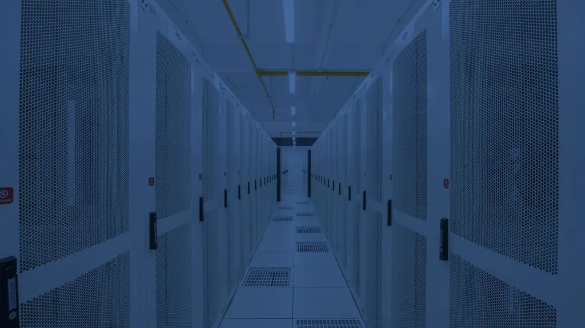

IT integration and low voltage
for projects nationwide.
Hybridata Solutions is a nationwide IT integrator and low voltage company, providing network services nationwide and based in Dallas–Fort Worth, Texas. We provide Cisco-related hardware installations, network refreshes, structured cabling, data center and outside-plant fiber, fusion splicing and testing, wireless site surveys, design services, access control, surveillance, and network design. Start with the site, the requirements, and the project scope.
Our mission is to bring world-class technology to your business, breaking down the barriers between the best technical solutions and the way you operate, so you run efficiently and securely. We work ethically and build lasting relationships on trust.
- Cisco & Meraki installs, Ekahau and network engineers, and IMACD (installs, moves, adds, changes, disposal)
- Data racks, wireless access points, cameras and AV set up and running in no time
- 40+ years of combined experience, with a dedicated project manager on every project
- Fully insured on your property, with a warranty on materials and labor
- Quality work at a fair price, for one-time projects or ongoing maintenance
Everything low voltage, from one team.
From the network design to the last cable and camera, we handle the whole job, so you are not coordinating separate contractors.
- 01
Network Engineering, Design-Assist & Consulting
Network design, Cisco and Meraki installs, network refreshes, and on-site surveys and audits.
Explore this service → - 02
Data Center Fiber & Structured Cabling
Copper and fiber cabling, racks, cable management and labeling, built clean and documented.
Explore this service → - 03
Fusion Splicing & Fiber Testing
Fusion splicing, termination and testing of your fiber, with results you can keep on file.
Explore this service → - 04
Access Control & Surveillance
Card readers and security cameras, cabled and connected to your network.
Explore this service → - 05
Wireless Site Surveys, Design & Installation
We survey your space, design your wireless network in Ekahau, and install every access point to spec.
Explore this service → - 06
PTP (Point-to-Point Wireless Links)
Wireless links between buildings or sites where running fiber is not practical.
Ask about this service → - 07
OSP Fiber Infrastructure & Route/Permit/ROW Coordination
Outside-plant fiber, with route, permit, and right-of-way coordination handled together.
Explore this service → - 08
Audio/Video
Conference rooms, displays and sound systems, installed and wired for your space.
Ask about this service → - 09
- 10
White Noise (Sound Masking)
Sound masking that keeps conversations private in open offices and healthcare spaces.
Ask about this service → - 11
Electrical Services
Electrical work that supports your low voltage project, coordinated by the same team.
Ask about this service →
Wireless Site Surveys, Design & Installation
Wi-Fi problems are usually design problems. We use Ekahau, the industry standard for wireless engineering, to survey your space, design your network, and install every access point to spec.
Our workflow starts in Ekahau Pro, where we model your facility with wall attenuation, ceiling height, and client density to generate an access point layout that meets your coverage and capacity targets before deployment. On-site, we validate with passive and active surveys, measuring signal strength, SNR, and roaming behavior against the design spec, and correcting any deviation before handoff.
The result: full coverage, reliable roaming, and a network that holds up as you add devices. One team, from blueprint to broadcast.
Getting started is simple.
Tell us about the site and what you need. We take it from there.
- 01
Tell us about the project
The site, what you need, and where the project stands.
- 02
Consultation or site survey
A consultation for planning questions, or a site survey when we need to see the space.
- 03
A clear scope and quote
We confirm the scope with you, then schedule the work.
Built to be done right the first time.
- Fully insured
- Insurance documentation is available for your project.
- Warranty on materials and labor
- Every job comes with a warranty on materials and labor.
- Experienced BICSI field technicians
- 40+ years of combined experience in the field.
- A dedicated project manager
- One point of contact on every project, from survey to handoff.
Common questions about working with Hybridata.
- What does Hybridata do?
- We are an IT integration and low voltage contractor headquartered in Texas and working nationwide. We install structured cabling and fiber, design and survey Wi-Fi networks in Ekahau, handle Cisco and Meraki installs, and install access control, surveillance and related systems for commercial facilities.
- Where are you based, and where do you work?
- We are headquartered in Texas and work on projects nationwide.
- What does low voltage work cover?
- Low voltage covers structured cabling, fiber, Wi-Fi, access control, security cameras, audio/video, paging and sound masking. We install all of them.
- Are you insured, and is the work warrantied?
- Yes. We are fully insured while on your property, and all work comes with a warranty on materials and labor.
- How do I start a project?
- Request a site survey or consultation on the Contact page and tell us about the site, the services you need and any known requirements.
Ready to talk about your project?
Request a consultation or a site survey and we will get back to you.